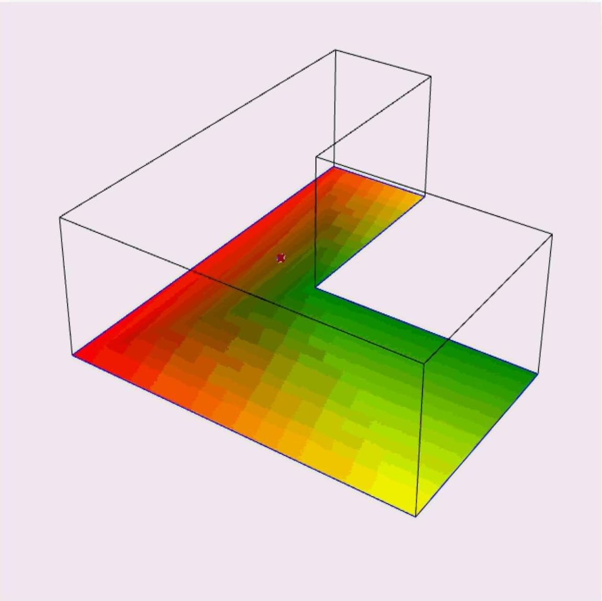

Encoding architectural intent across generative platforms
A pre-registered factorial study of how AI image-generation platforms handle architectural instruction, benchmarked against geometry that is hard to fake.


Generative design tools are usually demonstrated on geometry that flatters them, and judged on whether the output looks good. That tells you very little about whether the model understood the instruction.
The study treats prompt modality, workflow stage and model architecture as independent variables. Six models are tested across six practitioner workflow stages — brainstorming, material fidelity, spatial instruction, geometric constraint, constant composition, sketch-to-render — over five standardised briefs at two specificity levels. Evaluation is split into three instruments that do not contaminate each other: automated computational geometry metrics, expert architectural quality rating, and failure-mode coding.
A ten-prompt calibration suite with binary pass/fail criteria profiles each model across material literacy, spatial and structural logic, geometric compliance, and scale. The Menger sponge pilot supplies the hostile case: recursive, self-intersecting geometry that a model cannot approximate from style alone. Printing selected results closes the loop — a form a generative tool produces happily but no printer can build is exactly the failure the benchmark exists to catch.
More in Design Intelligence

Graph ML for building–ground topology
Unsupervised graph-level representation learning that classifies how a building meets the ground, trained on synthetic 3D topological datasets.
View project →
AI-informed fire egress from IFC models
A web-based graph-ML tool that computes optimal evacuation paths directly from IFC building models, linking design geometry to life-safety performance.
View project →
Benchmarking machine-learning models for building energy demand
Eight model families ranked under one protocol for predicting heating and cooling loads across single-zone and multi-zone building topologies.
View project →